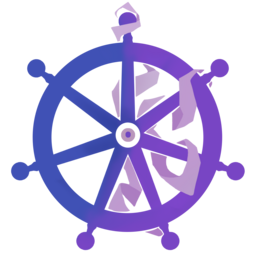

dekube
de-Kubernetise. One source of truth, no redemption.
Your Kubernetes manifests already describe everything.
dekube generates compose.yml from them —
same charts, same values, no second stack to maintain.
Convert Kubernetes and Helm to Docker Compose
dekube turns Kubernetes manifests, Helm charts, and helmfiles into a working
compose.yml plus reverse-proxy config. It renders your charts with
helm/helmfile template, then translates the output —
Deployments, Services, PersistentVolumeClaims, Ingress, ConfigMaps, Secrets —
into Compose services, volumes, and a Caddyfile. Same charts, same values,
no second stack to maintain.
Who it's for
Anyone holding Kubernetes manifests that need to run under Compose. Developers who want the full stack — databases, queues, reverse proxy — running locally without standing up a cluster; CI pipelines that exercise an app with no control plane in the loop; teams that keep the chart as the single source of truth but ship to a Compose target. And self-hosters putting an app that only exists as a Helm chart onto a NAS, Synology, Unraid, or VPS that only speaks Compose.
How it works
- Render — dekube runs
helmorhelmfile templateon your source. The chart stays the source of truth. - Convert — the rendered Kubernetes manifests become Compose services, with volumes, healthchecks, and service-DNS aliases wired up.
- Run —
docker compose up. Re-run dekube after any chart change; yourdekube.yamloverrides are preserved.
For a full example, see how to run a Helm chart without a cluster, read the engine documentation, or start with helmfile2compose for control and CI.
FAQ
Do I have to maintain a separate Compose file by hand?
No. The Helm chart stays the single source of truth. compose.yml is a generated artifact you regenerate whenever the chart changes, so there is no second stack to keep in sync.
Can I run a Helm chart without a Kubernetes cluster?
Yes. dekube renders your Helm chart or helmfile with helm/helmfile template and converts the resulting Kubernetes manifests into a Docker Compose file. No cluster, no kubelet, no control plane — just docker compose up.
Is dekube good for self-hosted and homelab setups?
It's a common one. If an app ships only as a Helm chart but your NAS, Synology, Unraid, or VPS only speaks Docker Compose, dekube converts the chart so you can deploy it the same way you deploy everything else.
Which dekube distribution should I use?
Use kubernetes2simple (k2s) if you just want it to work — one curl command. Use helmfile2compose if you want to choose extensions, exclude services, or run the conversion in CI.